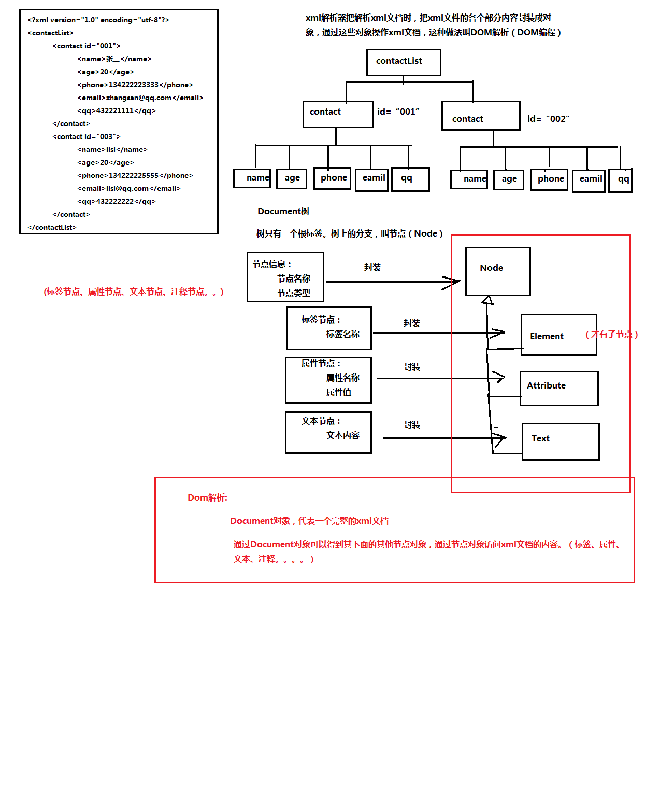

DOM解析原理：xml解析器一次性把整个xml文档加载进内存，然后在内存中构建一颗Document的对象树，通过Document对象，得到树上的节点对象，通过节点对象访问（操作）到xml文档的内容。
解析图.
4.5 Dom4j工具
非官方，不在jdk中。
使用步骤：
1）导入dom4j的核心包。 dom4j-1.6.1.jar
2）编写Dom4j读取xml文件代码
| public static void main(String[] args) { try { //1.创建一个xml解析器对象 SAXReader reader = new SAXReader(); //2.读取xml文档，返回Document对象 Document doc = reader.read(new File("./src/contact.xml")); System.out.println(doc); } catch (DocumentException e) { e.printStackTrace(); throw new RuntimeException(e); } } |
4.6 Domj4读取xml文件
节点：
Iterator Element.nodeIterator(); //获取当前标签节点下的所有子节点
标签：
Element Document.getRootElement(); //获取xml文档的根标签
Element ELement.element("标签名") //指定名称的第一个子标签
Iterator<Element> Element.elementIterator("标签名");// 指定名称的所有子标签
List<Element> Element.elements(); //获取所有子标签
属性：
String Element.attributeValue("属性名") //获取指定名称的属性值
Attribute Element.attribute("属性名")；//获取指定名称的属性对象
Attribute.getName() //获取属性名称
Attibute.getValue() //获取属性值
List<Attribute> Element.attributes(); //获取所有属性对象
Iterator<Attribute> Element.attibuteIterator(); //获取所有属性对象
文本：
Element.getText(); //获取当前标签的文本
Element.elementText("标签名") //获取当前标签的指定名称的子标签的文本内容